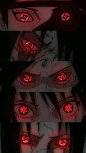

The Uchiha Clan is remembered as one of the most influential and powerful clans in the history of the ninja world. Although the clan experienced many hardships and eventually suffered a tragic downfall, its impact continued to shape future generations. The story of the Uchiha Clan is one of power, sacrifice, determination, and redemption.

The Uchiha Clan played a major role in many important events throughout ninja history. From helping establish Konohagakure, the Hidden Leaf Village, to influencing the outcome of the Fourth Great Ninja War, the clan's actions affected the entire shinobi world. Their powerful abilities and strong leadership made them one of the most respected clans among all villages.
Throughout history, the clan produced many legendary shinobi.
Madara Uchiha was one of the founders of the Hidden Leaf Village and one of the strongest ninjas to ever live.
Itachi Uchiha became known for his intelligence, skill, and willingness to sacrifice everything for peace.
Sasuke Uchiha carried the clan's name into a new generation and helped save the world during the Fourth Great Ninja War.
Obito Uchiha also played a major role in shaping the events of the ninja world.
One of the greatest legacies of the Uchiha Clan is the Sharingan. This unique dojutsu became famous throughout the ninja world because of its incredible abilities. The Sharingan allowed users to copy techniques, predict movements, cast powerful genjutsu, and evolve into even stronger forms such as the Mangekyo Sharingan and Eternal Mangekyo Sharingan. The Sharingan became a symbol of the clan's strength and talent.
The history of the Uchiha Clan teaches many important lessons. Their story shows how fear, misunderstanding, and hatred can create conflict between people. At the same time, it demonstrates the importance of loyalty, sacrifice, forgiveness, and hope. Characters such as Itachi and Sasuke showed that even after great tragedy, it is possible to choose a better path.
After learning the truth about his brother and the clan's history, Sasuke chose to protect the village rather than seek revenge. He became one of the strongest shinobi of his generation and worked to maintain peace. Through Sasuke and his family, the legacy of the Uchiha Clan continues into the future.
Even though most of the clan members are gone, the name Uchiha remains respected throughout the ninja world. Their achievements, sacrifices, and contributions continue to be remembered by future generations. The clan's influence can still be seen in the history, traditions, and stories of Konohagakure.
The Uchiha Clan's journey is one of the most memorable stories in the Naruto series. Their rise, struggles, and sacrifices shaped the destiny of the ninja world. Although their clan faced many challenges, their legacy lives on through their ideals, their descendants, and the lessons they left behind. The Uchiha Clan will always be remembered as one of the greatest and most influential clans in ninja history.